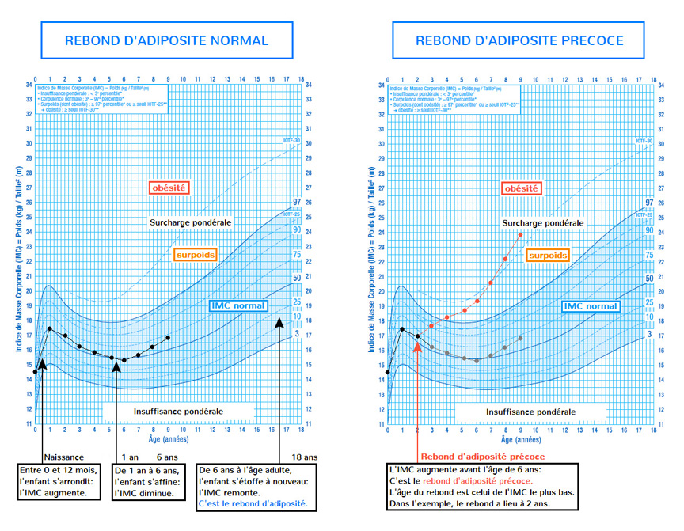

AQUAKID est le fruit d’un rêve : offrir à nos enfants une vie heureuse et meilleure. AQUAKID est née de l’imagination d’un papa, d’une maman et de leurs deux garçons pour offrir une solution concrète et ludique améliorant au quotidien la vie de nos enfants. La mission d'AQUAKID est de rendre l’eau amusante pour nos enfants, afin de proposer une alternative rigolote aux boissons sucrées, et de participer à la lutte contre l’obésité infantile.
Le courage, pour bâtir un monde meilleur. La joie, pour vivre avec le sourire. La bienveillance, pour rendre nos enfants heureux.
Oui. AQUAKID est une aventure 100% française ! Chez nous, tout est français : la conception, le design, les bouteilles, les bouchons, les étiquettes et même le site internet que vous êtes en train de lire… tout, tout, tout !
Oui. L’eau minérale AQUAKID est naturellement pure et possède une composition minérale optimale pour toute la famille.
Tout le monde ! Du pôle Nord au pôle Sud, absolument tout le monde peut boire AQUAKID sans restriction ! Faiblement minéralisée, AQUAKID convient parfaitement aux nourrissons, aux enfants, aux femmes enceintes et aux personnes suivant un régime pauvre en sodium (0.001g/litre).
L'eau minérale AQUAKID est conditionnée dans des bouteilles PET, fabriquées en France et 100% recyclables.
AQUAKID est disponible au format 50 cl.
Les bouteilles AQUAKID ne contiennent absolument pas de phtalates, ni de Bisphénol A.
Le surpoids et l’obésité sont définis par l'Organisation mondiale de la santé (OMS) comme « une accumulation anormale ou excessive de graisse corporelle qui peut nuire à la santé ». On appelle « adiposité » le développement du tissu graisseux dans une partie localisée de l’organisme.
L’indice de masse corporelle (IMC), reflet de la corpulence, est l’indicateur le plus couramment utilisé pour estimer l’adiposité d’un individu.
L’IMC est égal au poids (en kilogrammes) divisé par la taille (en mètres) au carré :
Une personne ayant un IMC supérieur à 25 est considérée comme étant en surpoids. Une personne ayant un IMC supérieur à 30 est considérée comme étant obèse.
Chez l’enfant, la corpulence varie naturellement au cours de la croissance et l’IMC doit être interprété à l’aide des courbes de corpulence, en fonction de l’âge et du sexe. De 0 à 12 mois, la corpulence des bébés augmente fortement, puis diminue dès que les bébés se mettent à marcher. Entre l’âge de 1 an et 6 ans, la corpulence des enfants diminue car les enfants grandissent plus vite qu’ils ne grossissent. Vers 6 ans, on constate un rebond d’adiposité : les enfants grossissent plus vite qu’ils ne grandissent et leur corpulence s’accroît. Le suivi de ce rebond d’adiposité est primordial car il s’agit d’un marqueur prédictif du risque d’obésité chez l’enfant. Si ce rebond d’adiposité a lieu avant l’âge de 6 ans, il faut consulter un pédiatre car le risque d’obésité s’accroît pour l’enfant.
Selon l’OMS, on compte 1,4 milliard d’adultes en surpoids, dont 500 millions d’obèses, au niveau mondial.
En France, 1 adulte sur 2 est en surpoids ou obèse , c'est-à-dire presque 22 millions de personnes.
En France, 1 enfant sur 5 est en surpoids ou obèse , soit 2 millions d’enfants de 0 à 18 ans . La probabilité qu’un enfant obèse le reste à l’âge adulte varie de 20% à 50% avant la puberté , et de 50% à 70% après la puberté.
Parce que le surpoids et l’obésité touchent un nombre considérable de personnes et engendrent de nombreuses maladies chroniques . A l’échelle mondiale, 44% du diabète, 23% des cardiopathies ischémiques, et jusqu’à 41% des cancers peuvent être imputés au surpoids et à l’obésité.
À titre d’exemple, le diabète est la maladie chronique la plus fréquente en France et affecte plus de 3 millions de personnes (diabète type II).
En 2001, la France s’est dotée d’une véritable politique nutritionnelle avec la création du Plan National Nutrition Santé (PNNS), un plan de santé publique visant à améliorer la santé de la population française à travers la nutrition. La nutrition est définie comme l’équilibre entre les apports liés à l’alimentation et les dépenses occasionnées par l’exercice physique. Le PNNS a 4 objectifs majeurs :
(1) Réduire le surpoids et l’obésité dans la population française,
(2) Augmenter l’activité physique et la sédentarité à tous les âges,
(3) Améliorer les pratiques alimentaires et les apports nutritionnels, notamment chez les populations à risque,
(4) Réduire la prévalence des pathologies nutritionnelles.
En 2010, le Plan Obésité (PO) a été créé afin d’intensifier et de mieux coordonner la recherche, la prévention et l’organisation des soins en matière d’obésité.
Pour plus d’informations, visitez le site www.mangerbouger.fr
Au niveau mondial, l’OMS a défini la Stratégie mondiale OMS pour l’alimentation, l’exercice physique et la santé en 2004, afin de réduire la mortalité et la morbidité des populations, en améliorant les pratiques alimentaires et en encourageant l’exercice physique. Les rapports et les recommandations de l’OMS servent de référence pour la définition et la mise en place de politiques publiques nationales.
Le surpoids et l’obésité sont généralement le résultat d’un déséquilibre entre les apports issus de l’alimentation et les dépenses liées à l’exercice physique. Plus précisément, le surpoids et l’obésité sont souvent dus à une conjonction de facteurs, notamment:
- les facteurs génétiques (héritabilité),
- les facteurs périnataux (obésité maternelle, diabète maternel, tabagisme maternel, allaitement non maternel, etc.),
- les facteurs environnementaux (statut socio-économique, alimentation, sédentarité, lieu de vie, durée de sommeil, etc.),
- les facteurs psychologiques (dépression, boulimie, négligence, etc.).
On peut citer notamment :
- les complications métaboliques (insulino-résistance),
- les complications cardiovasculaires (dyslipidémie, athérosclérose, hypertension, etc.),
- les complications respiratoires (asthme, etc.),
- les complications orthopédiques (douleurs musculo-squelettiques, fractures, déformations, etc.),
- les complications dentaires (caries),
- les conséquences esthétiques et psychologiques.
En soi, le sucre n’est pas mauvais pour la santé. Il est même indispensable à l’organisme et au bon fonctionnement du cerveau. En revanche, une consommation excessive de sucre provoque généralement un apport calorique favorisant le surpoids et l’obésité. Pour l’Agence Française de Sécurité Sanitaire des Aliments (AFSSA), la conclusion est simple : « La consommation excessive de glucides, en particulier sous formes de glucides simples ajoutés, notamment sous forme de boissons, apparaît donc bien en cause dans le développement du surpoids et de l’obésité des enfants et des adolescents dans les pays industrialisés » (Glucides et Santé, 2004).
Les sodas et les jus de fruits contiennent généralement autour de 100 grammes de sucre par litre, cela équivaut à 17 morceaux de sucre par litre ! Soit plus de 5 morceaux de sucre pour une cannette (33 centilitres). L’apport calorique est d’autant plus significatif que les sodas et les jus de fruits n’ont pas d’effet rassasiant. Enfin, la plupart des sodas apportent des « calories vides », c’est-à-dire un apport calorique dénué de nutriments (vitamines, minéraux etc.).
Les sodas et les jus de fruits sont le principal vecteur de glucides simples chez l’enfant. Les boissons rafraîchissantes sans alcool contribuent à hauteur de 19% des apports en glucides simples chez l’enfant (INCA 2, 2006-2007). Le PNNS conseille de limiter la consommation de boissons sucrées à un demi-verre (125 cl) par jour chez l’enfant.
En France, moins de 1 enfant sur 4 a une hydratation conforme aux repères du PNNS. Les deux tiers des enfants consomment moins d’un litre d’eau par jour, tandis qu’un tiers consomment plus d’un demi-verre (125 cl) de boisson sucrée par jour.
Le suivi du rebond d’adiposité est essentiel pour un dépistage précoce et efficace de l’obésité. Le rebond d’adiposité survient normalement vers 6 ans, mais il peut se produire entre 1 an et 5 ans chez certains enfants. Plus le rebond d’adiposité est précoce, plus le risque de devenir obèse s’accroît.
Par ailleurs, une ascension continue de la courbe IMC depuis la naissance ou un changement rapide de couloir de la courbe IMC vers le haut sont autant de signaux d’alerte à prendre au sérieux.
La première étape est la consultation du pédiatre afin de réaliser un examen clinique, permettant d’établir un diagnostic.
Chez un enfant en surpoids présentant des antécédents familiaux de diabète ou de dyslipidémie ou chez un enfant obèse, il est recommandé de réaliser systématiquement un bilan sanguin.
En fonction des résultats, une prise en charge médicale avec accompagnement diététique peut être recommandée.